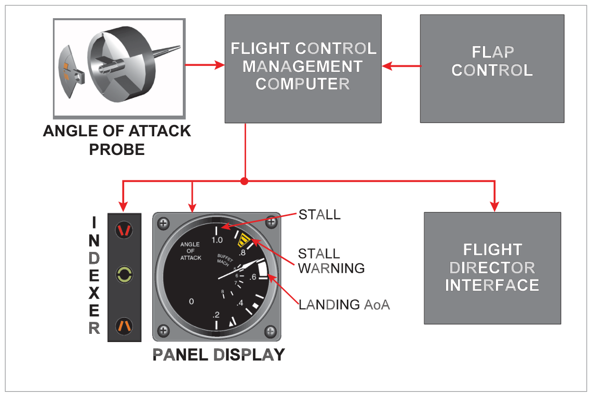
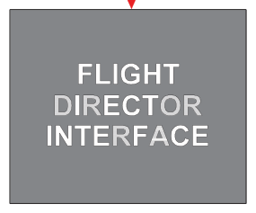
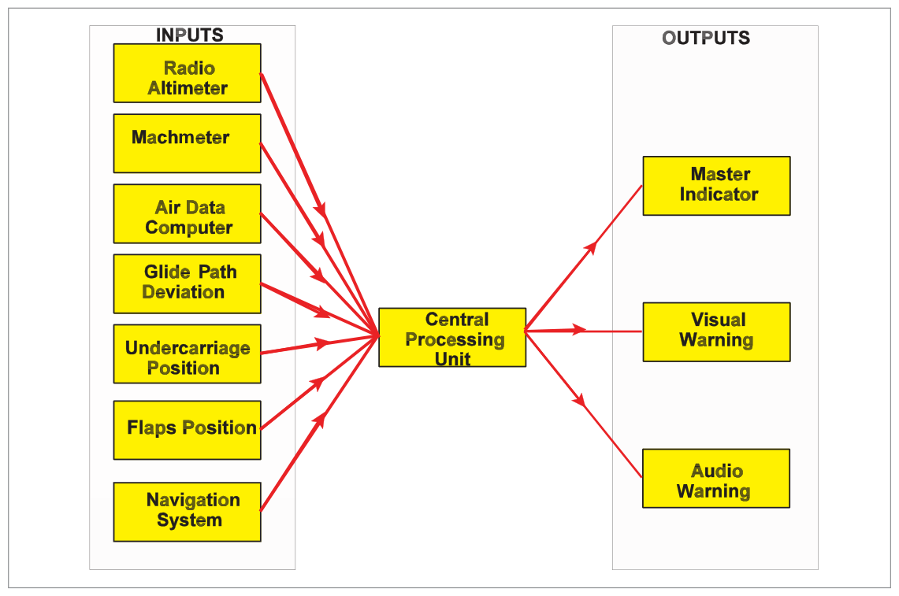
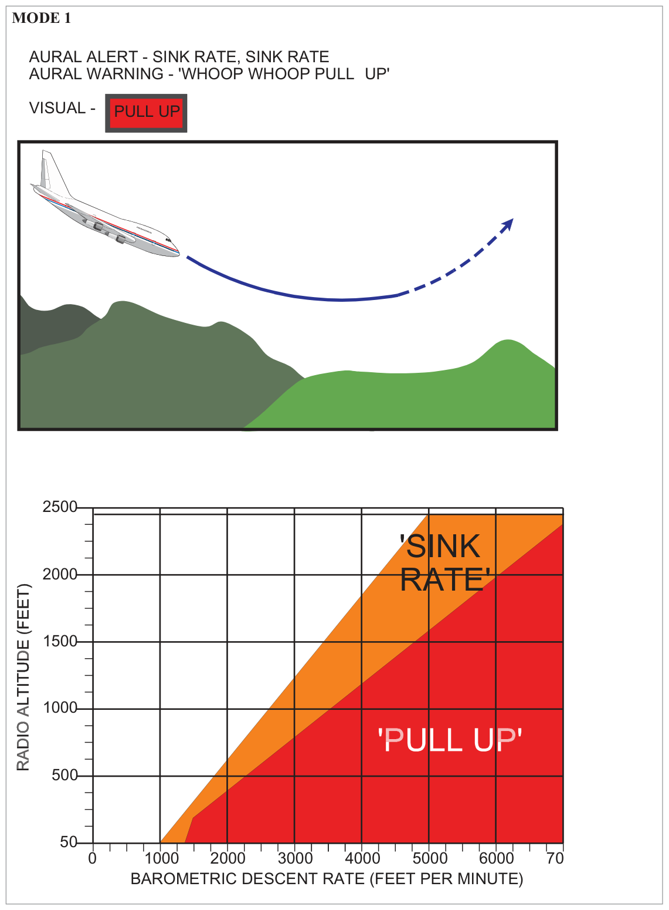
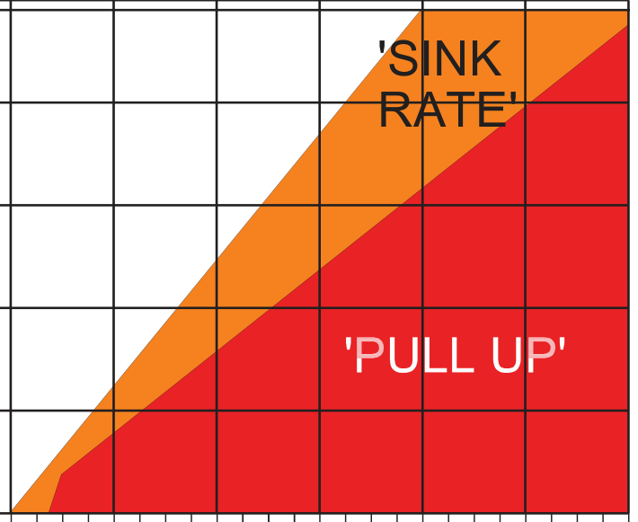
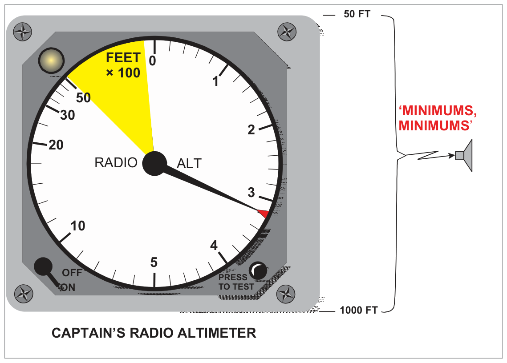

GPWS gives visual and audible warnings when aircraft proximity to terrain poses a safety threat. Operates between 50 ft and 2450 ft actual height above surface. Automatically selects correct mode.

Fig 34.1 — GPWS: inputs, outputs, central processing unit (source p.447)

Fig 34.2 — GPWS system block diagram (source p.447)
Term
Definition
Alert
A caution generated by the EGPWS equipment
Warning
A command generated by the EGPWS equipment
Genuine
Warning in accordance with technical specification
Nuisance
Alert in accordance with specification, but aircraft is flying an accepted safe procedure
False
System fault causes a warning not in accordance with specification

Fig 34.3 — Boeing 737 Mark II EGPWS — First Officer's instrument panel (source p.450)
2. GPWS Modes — Summary Table
Mode
Condition
Alert
Warning
1
Excessive barometric descent rate
"Sink Rate"
"Whoop Whoop Pull Up"
2
Excessive terrain closure rate
"Terrain Terrain"
"Whoop Whoop Pull Up"
3
Altitude loss after T/O or G/A
"Don't Sink"
—
4A
Unsafe terrain clearance – gear not down
"Too Low Gear" / "Too Low Terrain"
—
4B
Unsafe terrain clearance – flaps not landing
"Too Low Flaps" / "Too Low Terrain"
—
5
Descent below ILS glide slope
"Glide Slope"
—
6A
Below selected minimum radio altitude
"Minimums Minimums"
—
6B
Altitude call-outs & bank angle
"Bank Angle"
—
7
Windshear
—
"Windshear"
3. Mode 1 — Excessive Barometric Descent Rate
Two boundaries. Independent of aircraft configuration. Operates 50–2450 ft RA.
First boundary: Alert — "SINK RATE, SINK RATE" (repeated every 1.5 seconds)
Second boundary: Warning — "WHOOP WHOOP PULL UP" until rate of descent corrected
Visual: PULL UP light

Fig 34.4 — GPWS Mode 1 envelope (source p.454)

Fig 34.5 — Mode 1 — barometric descent rate vs RA (source p.454)
4. Mode 2 — Excessive Terrain Closure Rate
Monitors Mach number, radio altitude rate of change, barometric altitude, and aircraft configuration.
10. Mode 6B — Altitude Call-outs & Bank Angle Alert
Call-outs at selected altitudes (e.g., 200 ft and 100 ft to decision height) — customer option
"BANK ANGLE" alert for excessive roll angles (airline-defined limits, not structural limits)
Bank angle limit reduces with proximity to ground (reduced wingtip clearance to prevent wing tip/engine damage during T/O and landing)

Fig 34.12 — Mode 6B bank angle alert (source p.465)
11. Mode 7 — Windshear Alerting
Mode 7 warnings take priority over ALL other modes.
Multiple parameters monitored: ground speed, airspeed, barometric height, rate of descent, radio altitude. Warning generated when initial conditions of entering windshear are detected. Benefit: allows earlier initiation of the windshear go-around procedure, increasing probability of avoiding accident.
GPWS/Mode 7 does NOT scan ahead — it detects windshear as the aircraft enters it. This is the key limitation compared to EGPWS forward-looking terrain awareness.
Maintain climb until minimum safe altitude for that route segment
Establishing cause takes second place.
Discontinuing the climb is permitted ONLY when:
Cause positively identified and warning has ceased
Aircraft operated by day in clear visual conditions
Immediately obvious the aircraft is not in danger
Report ALL alerts/warnings to the operator — even genuine/nuisance. Repeated nuisance warnings may reduce crew confidence in the system, which reduces safety margins.
EGPWS adds a Terrain Awareness & Warning System (TAWS) — a forward-looking capability using a worldwide terrain database + INS/GPS position data.
Classic GPWS limitation: No "look ahead" — Mode 2 warning on high terrain requires the aircraft to already be over rising ground. A sheer cliff would give no Mode 2 warning until the aircraft is over it.
EGPWS Terrain Threat Display
Shows terrain ahead of flight path in colour-coded display (green → yellow → red)
Alert timing: 40–60 seconds before predicted impact for caution (yellow); 20–30 seconds for warning (red + solid)
Threatening terrain: yellow (caution) → solid red (warning)
Misuse warning: Some pilots use the terrain display to "thread" through high terrain. This is a gross misuse and strongly advised against — display accuracy depends on navigation system accuracy.
The terrain display can be superimposed on the weather radar display, the ND, or on a dedicated PPI.
Alerts crew to possible premature descent for non-precision approaches regardless of configuration. Uses aircraft position relative to the runway in the EGPWS database (separate from FMS, not subject to regular updates). Future integration with RAAS (Runway Awareness and Advisory System) planned.
Integrity Testing (BITE)
BITE allows full testing of all functions and visual/aural warnings before flight
Pre-flight BITE is inhibited in flight
System continuously monitored in flight; failures automatically indicated
Short confidence check possible in flight but not a full BITE check
Test initiated by pressing the test switch
Inhibition of EGPWS Modes
EGPWS must NOT be de-activated (CB pulled) except for approved procedures. Instructions must state no person may de-activate except per Operations Manual.
Permitted inhibition cases:
Mode 5 (G/S) — when G/S signal present but aircraft deliberately not using it (e.g., localizer-only approach, different runway)
When gear or flap position inputs are known to be non-standard
Quick Revision Summary — Chapter 34:
GPWS operates 50–2450 ft AGL. Mode 7 = highest priority
Practice Questions — Oxford Textbook Q&A (Chapter 34)
These are the actual Oxford textbook questions with verified answers.
Q1.The GPWS the alert/warning information is provided by a radio altimeter with:
A downward transmitting beam 60° and 30° (fore/aft and athwartship)
A downward transmitting beam 30° and 60° (fore/aft and athwartship)
A forward transmitting beam
A downwards transmitting radio beam
Correct Answer: (d) A downwards transmitting radio beam
Explanation: The basic GPWS RA uses a downward-transmitting beam to measure height above terrain. The specific beam dimensions (fore/aft 60°, athwartship 30°) describe the classic RA antenna pattern but the key answer is simply a downward radio beam. Oxford answer key: d.
Q2.Mode 5 of GPWS is triggered when the aircraft is:
Below 500 ft RA with flaps not in landing position and speed below Mach 0.28
Below 500 ft RA with flaps not in landing position and speed below Mach 0.35
Below 200 ft barometric altitude with flap not in landing position and speed below Mach 0.28
Below 1000 ft RA and more than 1.3 dots below the ILS glide path
Correct Answer: (d) (Oxford answer: b)
Explanation: Mode 5 = glide slope deviation alert. Armed when: valid G/S signal + gear down + ≤1000 ft RA. Triggers when >1.3 dots below G/S. Note: Oxford answer key shows b — which describes Mode 4B conditions (flaps/speed). The correct Mode 5 description is (d). This is a known Oxford textbook question numbering quirk — see Section 8 for Mode 5 details.
Instructor's Note: Oxford answer key for this chapter: Q3 = b. Mode 5 is: below 1000 ft RA, G/S valid, gear down, >1.3 dots below G/S. Know this clearly regardless of question phrasing.
Q3.GPWS Mode 3 will give a "Don't Sink" alert during a go-around when altitude loss equals approximately:
5% of existing barometric altitude
10% of existing barometric altitude
15% of existing barometric altitude
200 ft absolute
Correct Answer: (b) 10% of existing barometric altitude
Explanation: Mode 3 activates when accumulated barometric loss equals approximately 10% of the existing barometric altitude. See Section 5.
Q4.Mode 4 (ground proximity with gear/flap not in landing configuration) — the arming altitude is:
500 ft RA
700 ft RA
200 ft RA
790 ft RA
Correct Answer: (b) 700 ft RA
Explanation: Mode 4 (both 4A and 4B) is armed after take-off upon climbing through 700 ft RA. See Sections 6 and 7.
Explanation: Mode 7 windshear warnings take priority over ALL other modes. Windshear is considered the highest-priority terrain/proximity threat because of its immediate effect on aircraft performance. See Section 11.
Q6.When the aircraft receives a GPWS warning, the FIRST action is to:
Identify the cause of the warning and report to ATC
Consult the QRH for the correct procedure
Level wings and initiate maximum gradient climb
Disengage the autopilot and pull up
Correct Answer: (c) Level wings and initiate maximum gradient climb
Explanation: The immediate response to ALL GPWS warnings is: level the wings + maximum gradient climb. Establishing the cause takes second place. The response must be positive and immediate. See Section 12.
Instructor's Note: This is the critical operational rule. GPWS response drills: Level → Pull → Climb. Cause analysis comes after terrain clearance is assured.